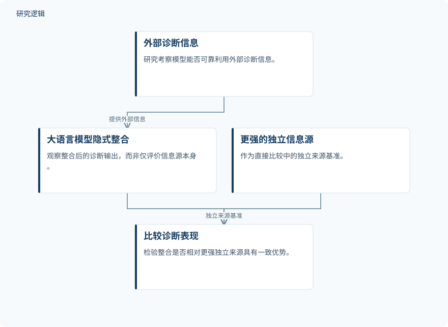

摘要解读
大语言模型作为诊断工具上层：工业故障诊断中未实现的互补性
When LLMs Sit Above Diagnostic Tools: Unrealized Complementarity in Industrial Fault Diagnosis
解读更新 2026-11-10 11:38 · 依据公开摘要整理，未核验全文细节
把专业诊断工具接到大语言模型之下，是否就能得到更可靠的工业故障诊断？这项研究提示：信息源更强，不代表整合结果更强；评价工具增强系统，不能只看它比未辅助模型提高了多少。
文章目录
专业工具更强，整合系统就一定更好吗？
在工业故障诊断中，大语言模型可以充当专业工具之上的信息整合层。但这里存在两个不同问题：外部诊断信息是否可靠，以及模型能否正确利用这些信息。研究围绕轴承振动、过程监测和半导体设备相关数据集，考察这种整合能否兑现不同信息源之间的互补性。
用配对重复调用区分建议影响与输出波动
研究覆盖五个诊断数据集，通过配对重复调用，将外部建议造成的影响与模型自身输出的不稳定性区分开来。其中四个数据集进行了直接整合比较，关注隐式整合结果能否超过更强的独立信息源，而不只是超过未辅助的大语言模型。
在 Tennessee Eastman 确认集上，评估方案在测试前已经固定。研究比较未辅助模型、模型与专业工具的隐式整合，以及专业工具单独使用的表现，并报告双来源理想选择器的结果，用于考察尚未被整合输出充分利用的互补空间。
依据摘要整理的诊断整合评估示意


概括外部诊断信息进入模型整合层后，与更强独立信息源进行比较的评估关系；不是论文原图。
下载 SVG图示关系说明
实线表示相邻阶段的信息流，虚线表示跨阶段联系或反馈。
外部诊断信息 → 大语言模型隐式整合：提供外部信息；大语言模型隐式整合 → 比较诊断表现：整合输出；更强的独立信息源 → 比较诊断表现：独立来源基准
Tennessee Eastman 确认集：整合有提升，但仍落后于专业工具
五个数据集中均出现了冲突外部信息推翻模型初始正确判断的情况。在四个具有直接比较的数据集中，隐式整合均未显示出相对更强独立信息源的一致优势。这不等于每个数据集上的整合结果都更差，而是不能据此认定整合具有稳定优势。
在 Tennessee Eastman 确认集上，未辅助模型准确率为64.67%，隐式整合为77.43%，专业工具单独使用为83.33%。专业信息使模型提高12.8个百分点，但整合结果仍比专业工具低5.9个百分点。双来源理想选择器达到92.76%，表明来源之间存在未被充分实现的互补性；这一结果不能视为实际整合系统已达到的性能。
整合输出漏掉了专业工具提供的295次纠正中的140次（47.5%），同时丢失了模型初始正确判断99次中的15次（15.2%）。提示词和专业工具敏感性分析下，性能差距仍然存在。
在两种证据呈现下都能解答的 CWRU 案例中，任务对齐的物理证据使七个模型中的六个对错误建议的易感性估计更低，其中五个区间不含零。相比之下，提高推理投入在五个模型中未带来可靠降低；另一个四模型 TEP 分析也未明确表明它能解决整合问题。
摘要尚不足以界定整合失效的适用边界
以上解读仅依据完整摘要。摘要未交代各数据集的完整样本构成、划分方式、模型与专业工具配置，以及冲突信息的具体生成条件，也不足以核对全部比较与验证细节。物理证据的结果还限定于特定案例子集，不能直接推广到全部诊断任务；这些信息未在摘要展开，并不意味着论文没有开展相关工作。
阅读启发：把信息源质量与整合质量分开看
阅读启发：对智能运维中的工具增强模型，应同时追问“信息是否更好”与“模型是否用好”。继续阅读时，值得关注更强独立来源如何确定、理想选择器如何定义，以及物理证据为何只在特定案例范围内报告效果。核心判断不应停留在相对未辅助模型的增益，而应包括整合是否真正超过已有的更强组件。
以上为本站阅读启发与建议，不是论文已验证的结论。